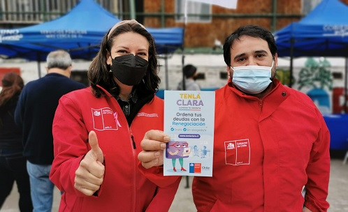

Nuestro Equipo de Seguridad

Oficial Juan Pérez
Coordinador de Seguridad
Lidera las estrategias de prevención y respuesta ante incidentes en la comuna.

María López
Experta en Vigilancia
Monitorea las cámaras de seguridad y garantiza una respuesta rápida.

Carlos García
Enlace Comunitario
Coordina las reuniones entre vecinos y autoridades de seguridad.
Luis Martínez
Analista de Datos
Identifica patrones en incidentes para mejorar la planificación estratégica.
Sofía Ramírez
Gestora de Proyectos Comunitarios
Planifica y ejecuta proyectos enfocados en mejorar la seguridad y la convivencia en la comuna.